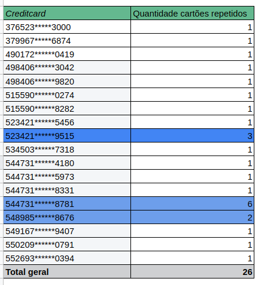

Case Stone
A partir de agora você é um analista do nosso time de Monitoramento e Prevenção! Está preparado?
Você está analisando um dos nossos clientes, S.A ACADEMIA, foi credenciado pelo canal POLO em 05-07- 2017.
O mesmo apresenta um ticket médio baixo. Dado que todas as transações são realizadas na modalidade de
cartão presente (no terminal), o estabelecimento possui serviço de antecipação de 100% automática e diária.
Segue um amostral do estabelecimento comercial.
Seguindo planilhas e PDF enviados por email
Planilha enviada unificada Spreadsheets
PDF usado PDF
3. Qual poderia ser o motivo do recebimento repentino de chargebacks?
Existem várias possíveis razões para um repentino aumento nos chargebacks, e pode ser difícil determinar exatamente qual é a causa raiz sem mais informações e investigações detalhadas.
- - Sistemas de segurança estão comprometidos ou que há falhas em suas verificações manuais se houver;
- - Muitos chargebacks podem acontecer devido a erros cometidos pelo comerciante, como cobranças duplicadas ou não autorizadas;
- - Alterações nas políticas crédito;
- - Alterações nas políticas de uso;
- - As transações podem ter sido contestadas por clientes que não reconheceram as compras;
- - O estabelecimento pode ter sido vítima de lavagem de dinheiro;
- - Nenhuma medida de segurança adotada pelo estabelecimento;
*Cartões com transações aprovadas também tiveram fraudes futuras;
*Maior parte das transações são aprovadas*;